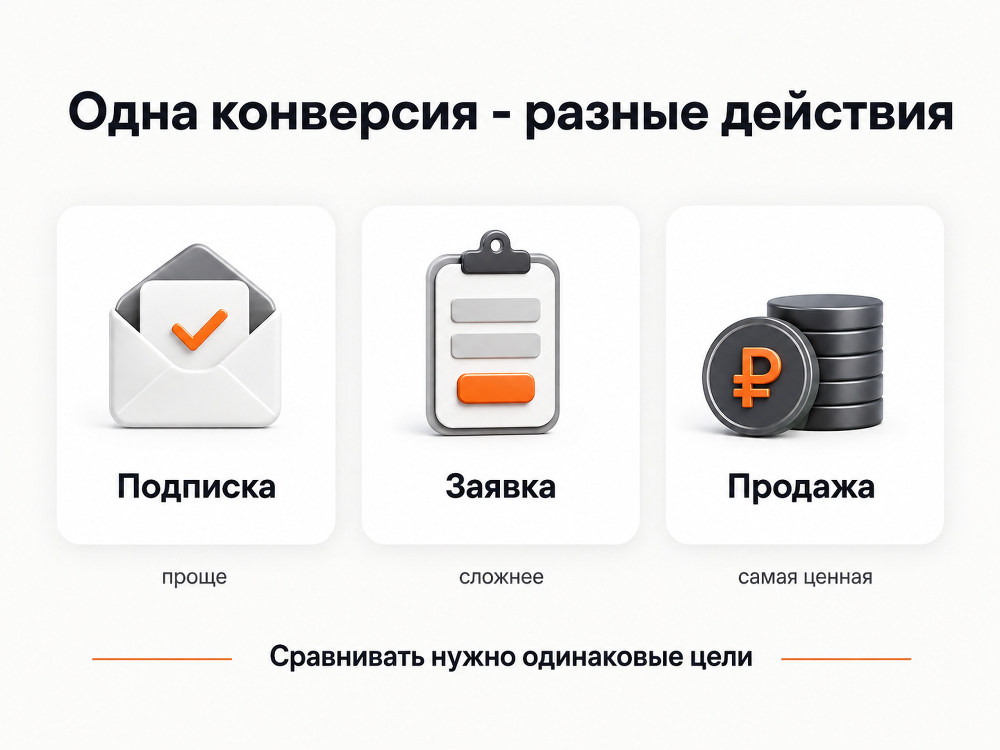
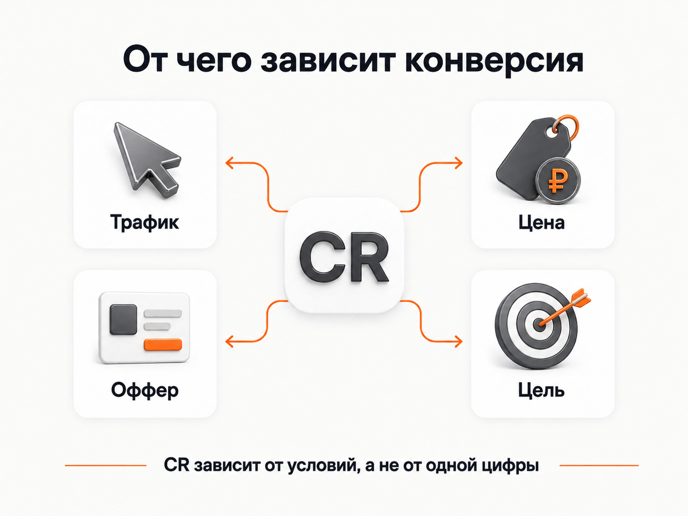
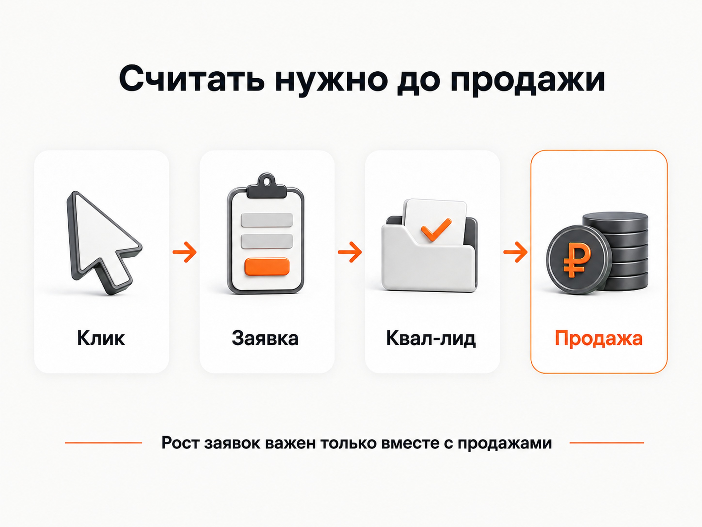

Блог о платном трафике
Какая конверсия рекламы считается хорошей
Универсальной хорошей конверсии рекламы не существует. Для одного бизнеса CR 2% может быть отличным результатом, а для другого 10% окажутся недостаточными.
Все зависит от того, что именно считается конверсией, какой трафик приходит на сайт, сколько стоит продукт, насколько сложно принять решение о покупке и что происходит с человеком после заявки.
Правильнее спрашивать не «у нас конверсия 5%, это хорошо или плохо?», а приносит ли реклама достаточно качественных заявок и продаж по приемлемой для бизнеса стоимости.
Подробнее о расчете показателя - в статье «Конверсия в Яндекс Директ: что это и как ее считать».
Почему нельзя назвать среднюю конверсию рекламы одной цифрой
За одинаковым процентом могут скрываться совершенно разные действия: подписка на Telegram-канал, регистрация на бесплатный вебинар, скачивание материала, заявка, звонок, оформление заказа или оплаченная покупка.
Получить регистрацию на бесплатное занятие значительно проще, чем сразу продать обучение за 100 000 рублей. Заявка на расчет промышленного оборудования стоимостью несколько миллионов рублей тоже будет совершаться реже, чем заказ недорогого массового товара.
Unbounce по данным 41 000 посадочных страниц и 464 млн посещений получил медианную конверсию около 6,6%. При этом для SaaS медиана составила 3,8%, а для e-commerce - 4,2%. Это иллюстрация разброса, а не норма для Яндекс Директа.

От чего зависит хорошая конверсия
От самой цели
Чем меньше действий требуется от пользователя, тем проще получить высокий процент. Поэтому сравнивать CR по микроцели и по продаже бессмысленно. Даже большое число заявок не всегда означает хороший результат, если большая их часть оказывается нецелевой.
От стоимости продукта
Чем выше цена и риски для покупателя, тем больше времени обычно требуется на решение. Низкий процент заявок для дорогого сложного продукта не обязательно говорит о плохом сайте или рекламе.
От типа трафика
Нельзя корректно сравнивать аудитории с разным уровнем спроса. Внутри одного проекта отдельно анализируют Поиск, РСЯ, ретаргетинг, брендовый трафик, новые и возвращающиеся аудитории и отдельные кампании.
От предложения и посадочной страницы
На результат влияют цена, оффер, доверие к компании, первый экран, форма заявки, мобильная версия, скорость сайта и соответствие страницы рекламному запросу.
От этапа воронки
У онлайн-школы можно считать: переход -> регистрация -> просмотр урока -> заявка -> оплата. Рост регистраций на бесплатное занятие не гарантирует рост продаж.

Высокая конверсия не всегда означает хорошую рекламу
Первая кампания получила 1 000 переходов и 100 регистраций - CR 10%, но только две продажи. Вторая получила те же 1 000 переходов и 40 более сложных заявок - CR 4%, но восемь продаж. По продажам вторая кампания эффективнее.
Можно упростить форму, предложить бесплатный продукт или агрессивную скидку и получить больше обращений. Но бизнесу нужны не проценты в отчете, а деньги.
Как определить хорошую конверсию именно для своей рекламы
1. Определить реальную целевую конверсию
Для лидогенерации это обычно заявка или звонок, лучше с отличием квалифицированных обращений от нецелевых. Для интернет-магазина основной результат ближе к оформленному или оплаченному заказу.
2. Посчитать стоимость результата
Если средний клик стоит 100 рублей, то при CR 1% заявка обойдется примерно в 10 000 рублей, при 2% - в 5 000, при 5% - в 2 000. Это не нормативы, а математический пример. Получившуюся цену заявки нужно сравнить с экономикой бизнеса.
О расчете стоимости целевого действия - в статье «CPA в Яндекс Директе: что это и как считать».
3. Проверить качество заявок
После CR и CPA нужно смотреть дальше: Клик -> Заявка -> Квалифицированный лид -> Продажа. Чем больше рекламный бюджет, тем важнее связывать рекламу с CRM и результатами отдела продаж.

4. Сравнивать сопоставимые данные
Сравнивайте одну цель с той же целью, Поиск с Поиском, РСЯ с РСЯ, одинаковые товары, периоды, устройства и посадочные страницы. Контекст важнее одной цифры.
Нужно ли ориентироваться на показатели конкурентов
Отраслевые исследования полезны только как грубая точка сравнения. Даже прямые конкуренты отличаются ценами, брендом, сайтом, предложением, географией, ассортиментом, маржинальностью, отделом продаж и качеством трафика.
Когда низкая конверсия действительно является проблемой
Проверять рекламу и сайт стоит, если показатель заметно ухудшился относительно собственной нормальной статистики или из-за него перестала сходиться экономика. Причины бывают в трафике, запросах, площадках РСЯ, предложении, цене, сайте, форме, мобильной версии и настройке целей.
Начать диагностику можно с аудита Яндекс Директа.
Какая конверсия рекламы считается хорошей в итоге
Хорошая конверсия - это не 3%, 5% или 10%. Это показатель, при котором реклама стабильно приводит нужное количество качественных заявок или продаж и укладывается в экономику бизнеса.
Главными ориентирами должны быть стоимость целевого действия, качество лидов, продажи, выручка и прибыль. Если CR растет, а продаж больше не становится, сам рост практически ничего не дает.